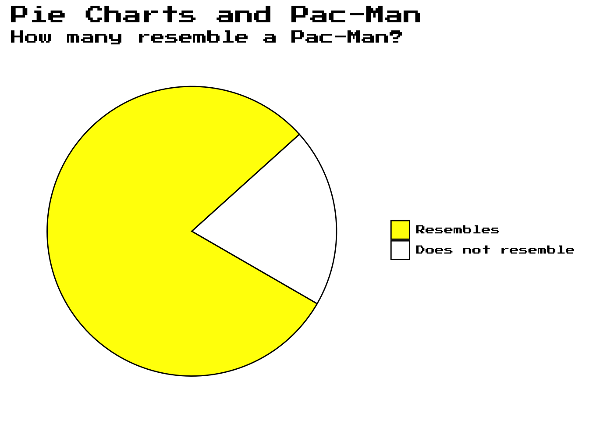
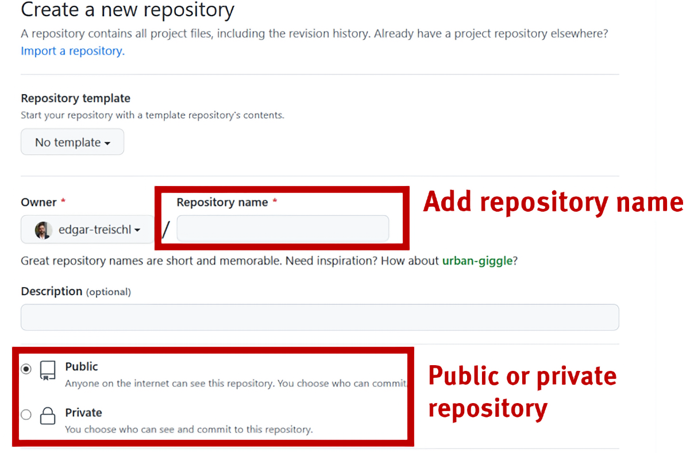
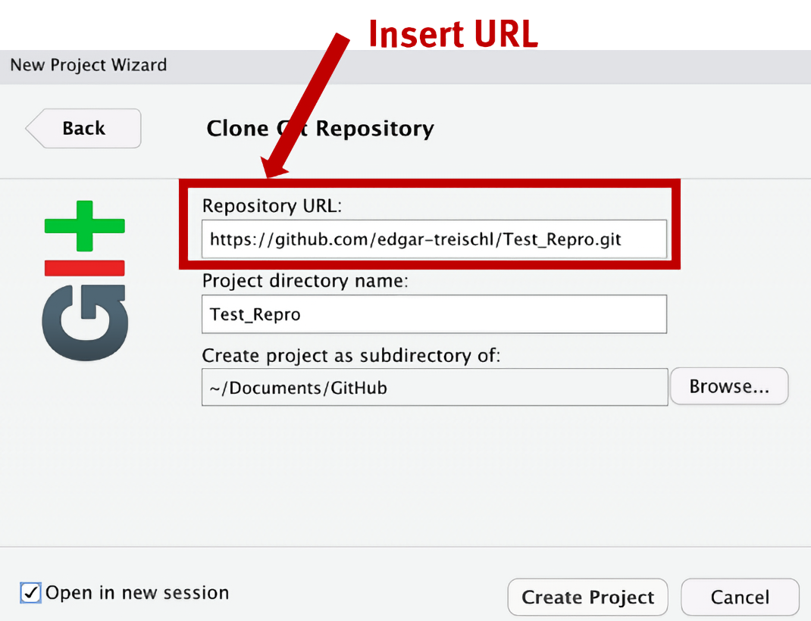

Git is a version control system used to track changes in code over time. It is also an essential tool for sharing work, collaborating, and automating repetitive tasks. GitHub and GitLab are platforms built around Git that allow developers to host, share, and collaborate on Git-based projects. Git is considered best practice in software development, but unfortunately, it has not yet become a standard tool in academic curricula. This article aims to introduce GitHub (and Git) in a non-technical fashion.
Git can be intimidating, especially for beginners. Fortunately, R users have a head start because several R packages and RStudio make it easy to work with Git. For example, the usethis package provides functions to set up Git, create repositories, and share code (Wickham et al. 2024). RStudio, on the other hand, offers a Git pane that simplifies common Git operations with the click of a button.
For example: Suppose your code lives on GitHub. While others can download it, they can also run it directly. The next time you update the code, other people only need to rerun it to access the latest version. The source_url() function from the devtools package allows you to execute R code directly from a URL (Wickham et al. 2022). As the next code chunk demonstrates, pacman.R creates a plot when sourced, but the code to create this plot lives only in my GitHub account.
# Link to GitHub repositorylink <-paste0("https://raw.githubusercontent.com/","edgar-treischl/edgar/refs/heads/","master/inst/graphs/pacman.R")# Source the code, show the plot from the source filedevtools::source_url(link)showplot()

Git is an essential tool for any data scientist, and GitHub is a game-changer in many ways. This article introduces Git and GitHub to R users, focusing on how R packages and RStudio make it easy to work with these tools.1 If you’re not an R user, don’t worry! The concepts are applicable to any programming language, and I will highlight some alternatives.
The article is structured as follows: First, we examine how to set up and use Git. Then, I’ll cover the most important Git basics with a focus on troubleshooting. Finally, I highlight GitHub Actions and where to find more information on setting up a CI/CD pipeline.
7.2 Getting Started
To get started with Git(Hub), there are three key steps: (1) Install Git on your local machine. (2) Create a GitHub account and connect RStudio (or a different IDE) with GitHub. (3) Learn how to work with Git and RStudio on a regular basis.
7.2.1 Install Git
Depending on your operating system, follow one of the installation instructions:
After installing Git, insert git --version into the console to check if the installation was successful. It returns the installed version if everything went well.
# Go to the console and type:git--version
git version 2.39.5 (Apple Git-154)
Next, you need to introduce yourself. Git needs to know your identity to track changes properly and attribute them to you. Set your username and email address with the git config command. You can configure this directly in the console or use the usethis package, which offers additional functionality for setting up your Git environment.
# Set your user name and email address via Rlibrary(usethis)use_git_config(user.name ="Edgar Doe",user.email ="edgar@example.org")
# Or set your user name and email address via the shellgit config --global user.name "User Name"git config --global user.email "email@adress.com"
Check if the configuration was successful via the git configuration list. It should return your username and email address.
Let’s familiarize with some key terminology before we continue. Because of its technical jargon, Git may seem overwhelming. Don’t worry, we only need a basic understanding of the most important terms:
Repository: A folder that contains all project files.
Push: Means to upload code (or files) to a Git repository.
Pull: Means to retrieve code (or files) from a Git repository.
Commit: A snapshot of a repository at a specific point in time.
Branch: A separate version of the repository, for example, to test new features.
Merge: Combining changes from two branches into one.
Merge conflicts: Occur when two branches modify the same part of a file, and Git cannot automatically determine which version is correct.
Fork: A copy of another repository, typically used to make changes to someone else’s project.
Pull request: A way to propose changes to a repository.
Certainly, pushing and pulling code, committing changes, and understanding Git concepts does not come naturally. However, we’ll gain a deeper understanding by putting these concepts into practice. To this end, create a free GitHub account first:
After creating a GitHub account, you can connect GitHub and RStudio with a personal access token (PAT). The usethis package makes this step convenient. Execute the create_github_token() function. A browser window will open, directing you to the GitHub page where you can create a token (https://github.com/settings/tokens). GitHub provides various options for customizing a token. You can set it to expire after a certain time, restrict it to specific repositories, or limit it to certain actions. If you create a token for the very first time, just stick to the default settings and copy it.
# The create_github_token() function opens the browser and show where to create the tokenusethis::create_github_token()
The set_github_pat() function from the credentials package helps us connect to GitHub and stores the PAT (Ooms 2024). Run the function and paste the copied token into the menu that pops up.
#The set_github_pat() function will store the tokencredentials::set_github_pat()
Finally, check if RStudio can authenticate to GitHub using the gh package (Bryan and Wickham 2024). The gh_whoami() function should reveal your GitHub identity.
That’s it! If RStudio recognizes your GitHub identity, you’re all set.
7.2.3 Work with GitHub and RStudio
The steps we just covered only need to be completed once. Let’s move on and learn how to use Git. First, go back to the GitHub website and create a new repository. This will be just a test repository, so don’t worry too much about the options available during the setup step. You can choose whether to make it public or private, add a README file, or include a license. For the sake of simplicity, just create the repository with the default settings. Add a repository name and create a public repository.

Source: Treischl(2023): Chapter 9
After creating a new repository, you’ll see the quick setup guide. This guide shows you how to connect your local repository to the remote repository on GitHub by providing the SSH and HTTPS link. You may use one of the links to clone the remote repository, but since you have created a PAT, we’ll connect using the HTTPS link. Copy the URL and return to RStudio.
Source: Treischl(2023): Chapter 9
To connect a local with the remote repository on GitHub, we need to clone it. Cloning essentially means copying the remote repository to your local machine. RStudio makes this process straightforward using the Project Wizard:
Create a new project in RStudio and click “Next.”
Select “Version Control.”
Choose “Git.”
Paste the repository URL into the corresponding field to clone the project. The next image shows the final step only.

Source: Treischl(2023): Chapter 9
The Git pane should appear in the upper right corner after RStudio has cloned the repository. If the pane doesn’t show up automatically, restart RStudio and check the Git settings. The Git pane provides easy access to basic Git commands and visually displays the status of the repository. Initially, the Git pane will be empty, but when you start working on your project, RStudio will show the differences between your local and remote repositories there.
For example, create a new R script, insert some code, and save the script. The new file should appear in the Git pane, marked with a yellow question mark. This indicates that the file isn’t being tracked yet. Once you stage the file, it will be marked with a teal “A” (for added). We’ll explore how to do this shortly. As highlighted in the next image, the same happens if you modify, delete, or rename a file.
Source: Treischl(2023): Chapter 9
Now that we’ve worked on a project, how do we save changes and push them to the remote repository? After creating and saving a new file, we need to stage it. Staging tells Git to track the file. We can do this by checking the box in the Git pane. Next, we must add a commit message. A commit message is a short description of the changes that we’ve made, and it’s good practice to write something meaningful yet concise. Once we’re satisfied with the message, click the “commit” button to save the changes locally. Finally, we can push changes to the remote repository by clicking the corresponding push button. The next image shows these steps in the Git pane.
Source: Treischl(2023): Chapter 9
Git informs us with a cryptic message if attempt to push the files was (not) successful. This message includes the commit hash (which uniquely identifies each commit) and the branch to which the changes were made. You may see something like this if the push was successful:
To https://github.com/your_username/your_repository.gitabc1234..def5678 main -> main
Go ahead and inspect the GitHub repository to confirm that the changes were made. What shall we do if the push was not successful? The Git pane in RStudio is a great tool for beginners, but it’s also important to understand what’s happening behind the scene and how to troubleshoot common issues. To this end, the next section introduces the most basic Git commands for working with GitHub. When you click a button in the Git pane, RStudio runs the corresponding Git commands in the background, and learning a few basic is all we need to effectively work with Git.
7.3 Basic Git commands
We could skip the initial steps, as we’ve already covered how to initialize a new repository and clone it. Programmatically, we would run:
# Initialize a new repositorygit init <your repository name># Clone a repositorygit clone <git-repo-url>
Use git branch to create a new branch, or add the --list option to view all existing branches.
# Create a new branchgit branch <branch-name># List all branchesgit branch --list
Delete a branch with git branch -d <branch-name>; switch to a different branch using git checkout.
# Delete a branchgit branch -d<branch-name># Switch to a branchgit checkout <branch-name>
Add a file to the staging area with git add <file>, or stage all files with git add -A.
# Add a file to the staging areagit add <file># Add All files to the staging areagit add -A
Commit changes with git commit. The -am option is a shortcut for git add -A followed by git commit -m. Push changes to the remote repository with git push origin <branch-name>.
# Commit changesgit commit -am<commit-message># Push changes to the remote repgit push origin <branch-name>
Keep in mind that you’ll need to pull changes from the remote repository if you’re collaborating with others. Use the git pull command to fetch and merge changes from the remote repository into your local one. If you’re working on a branch and want to merge it with the main branch, you can use the git merge <branch-name> command.
# Pull changes from the remote repgit pull# Merge two branchesgit merge <branch-name>
Do you need all this Git code if you’re happy with the Git pane? While the pane simplifies common Git operations, using Git commands gives you more control, flexibility, and the ability to manage more complex tasks. For instance, merge conflicts can occur when two branches modify the same part of a file, and Git won’t be able to automatically resolve the conflict. Git commands provide a more detailed understanding of the conflicts, which is especially useful when the conflict isn’t easy to resolve. So, it’s worth learning the commands, particularly for troubleshooting.
Use git blame to see who changed what and when, git status to view the working tree status, and git diff to inspect the differences between commits.
# Who is to blame?git blame file.txt# Shows the working tree statusgit status# Shows changes between commitsgit diff
Be cautious when reverting or discarding changes! The git revert command creates a new commit that undoes changes from a previous commit. The git reset command resets the repository to a previous commit. And as the last resort, the git reset --hard command forcefully discards any local changes. Keep in mind, once you discard changes, there’s no way to recover them.
# 💀💀💀 DANGER# Revert some existing commitsgit revert SHA# Reset the repository to a previous commit # Take care: This will discard any local changesgit reset # Ultima ratio only# A "hard reset": forcefully discard any local changes
Before attempting to reset, take a look at the commit history in RStudio. The commit history provides a detailed view of what changes were made and when. It’s a powerful tool for inspecting changes, identifying issues, and reverting changes if necessary.
Source: Treischl(2023): Chapter 9
7.4 Summary
This article introduced Git and GitHub to R users, focusing on how R packages and RStudio make it easy to work with these tools. We covered the basic steps to set up Git, create a GitHub account, and connect RStudio with GitHub. We also learned how to work with Git and RStudio on a regular basis. The Git pane in RStudio simplifies common Git operations, but it’s also important to understand what’s happening behind the scenes and how to troubleshoot common issues. I introduced the most basic Git commands for working with GitHub, which provide more control for managing more complex tasks. Consider reading the freely available Pro Git book, written by Scott Chacon and Ben Straub, for a more in-depth understanding of Git.
What’s next? This article only scratches the surface of Git(Hub). There are many more advanced features and best practices to explore, but let me at least outline that you now have a working CI/CD pipeline at your disposal. For example, wouldn’t it be nice to automatically run tests, check code quality, and deploy the website of an R package? This is where continuous integration and continuous deployment (CI/CD) come into play. They automate the process of testing, building, and deploying code. GitHub Actions and the usethis package make it easy to set up a CI/CD pipeline for R packages. The next code chunk demonstrates how to set up a GitHub Action, and you can refer to the GitHub website for more information.
# Set up a GitHub Actionusethis::use_github_action()# Which action do you want to add? (0 to exit)# (See <https://github.com/r-lib/actions/tree/v2/examples> for other options) # # 1: check-standard: Run `R CMD check` on Linux, macOS, and Windows# 2: test-coverage: Compute test coverage and report to https://about.codecov.io# 3: pr-commands: Add /document and /style commands for pull requests